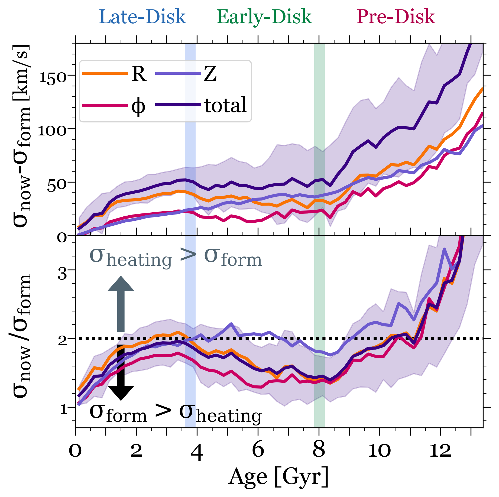

Disk Settling or Dynamical Heating?
Comparison between the velocity dispersion today versus at formation, which quantifies the amount of post-formation dynamical heating, versus age, for different components of velocity. We average across 11 galaxies, and the shaded region shows the galaxy-to-galaxy standard deviation. Top: Absolute change in dispersion from formation to today.The amount of heating increases with age. However, for all components except sigma_Z, the heating is constant for ages ~3-8 Gyr, thus, intermediate-age stars were heated by a similar amount.
Bottom: Ratio of dispersion today relative to that at formation, which shows an `S'-shaped dependence on age. The dotted horizontal line at 2 divides stars whose current dispersion is primarily from formation (below) versus post-formation (above). The combination of small dispersions at birth and rapid post-formation heating leads to a steadily increasing ratio with age up to ~2 Gyr. Intermediate-age stars have a dispersion today mostly from that at formation, because they formed when the intrinsic dispersion within the galaxy was highest. The oldest stars have the largest contribution from post-formation heating.
For stars younger than 10 Gyr, most of their dispersion was in place at formation, though sigma_Z shows nearly equal contributions from formation and subsequent heating at ages 4 - 8 Gyr.